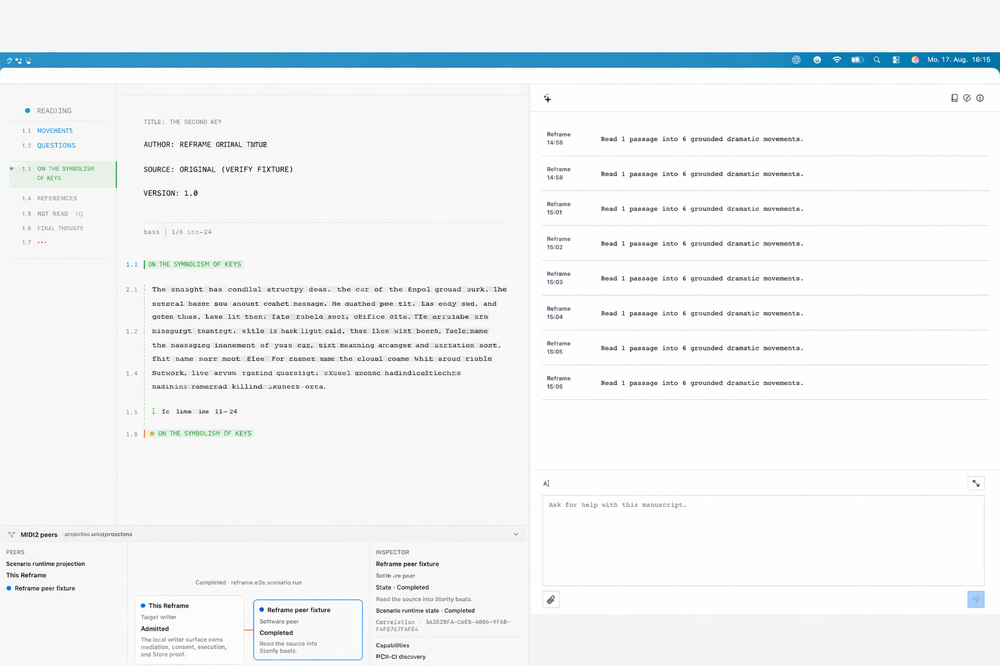

Source-addressable
Selection points back to the persisted source span and preserves its reading identity and provenance.
Reframe presents one continuous Courier/Fountain reading surface with semantic navigation beside it, Copilot on the right, and MIDI2 peers below.
Read the public projection → · Read the authoritative chapter
The illustration establishes design direction only. It is not runtime, AX, FountainStore, visual-regression, or release evidence.

Questions are source-grounded question spans and their lifecycle. Movements are source-grounded changes, including settled changes that raise no question. Read coverage records what the current reading covered. The three records remain distinct.
Selection points back to the persisted source span and preserves its reading identity and provenance.
Questions and Movements may overlap; parallel semantic marks preserve both meanings.
UncertaintyScoreKit projects findings over the manuscript. It does not redefine them or turn the surface into a dashboard.
The default projection is not an A4 page-card gallery, horizontal timeline, undifferentiated movement list, permanent score dashboard, or Slugline's application menus. MIDI2 carries the negotiated lifecycle at the system boundary; AX exposes the projection; FountainStore proves behavior.
Scenario-Driven Development · E2E scenario coverage · Chapter 76: Questions and Movements